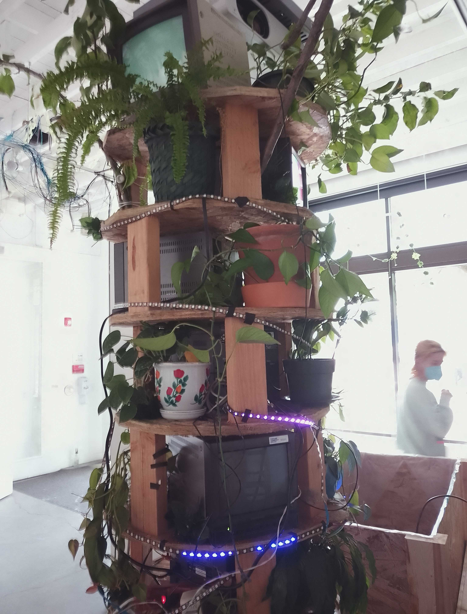
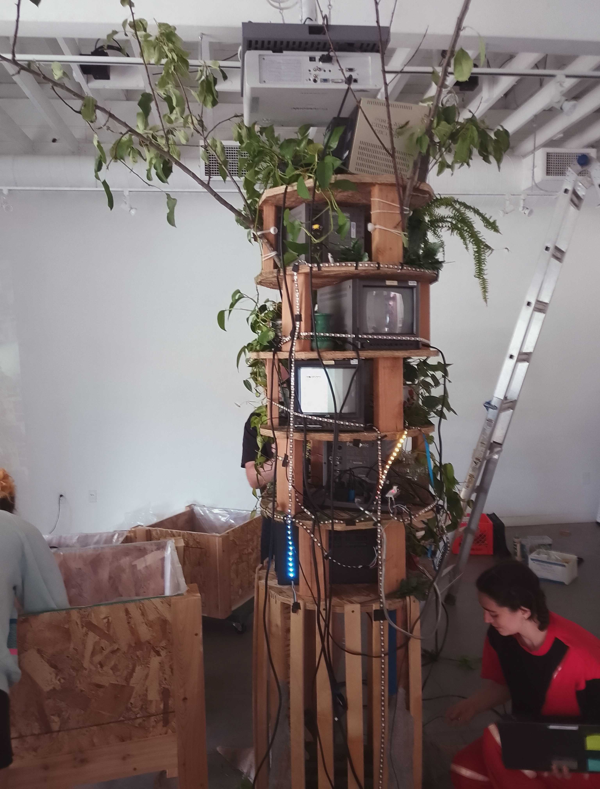
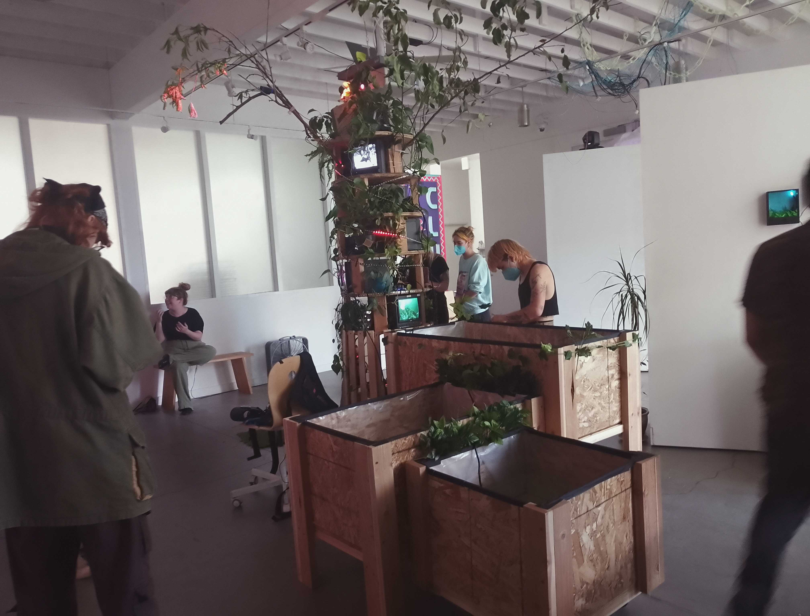
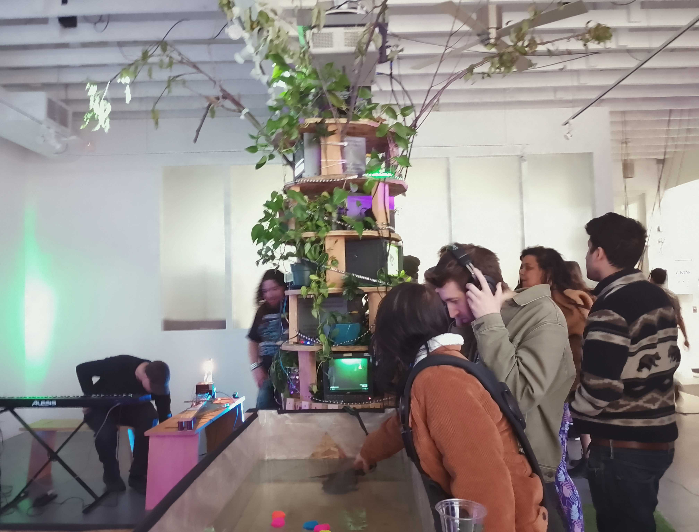
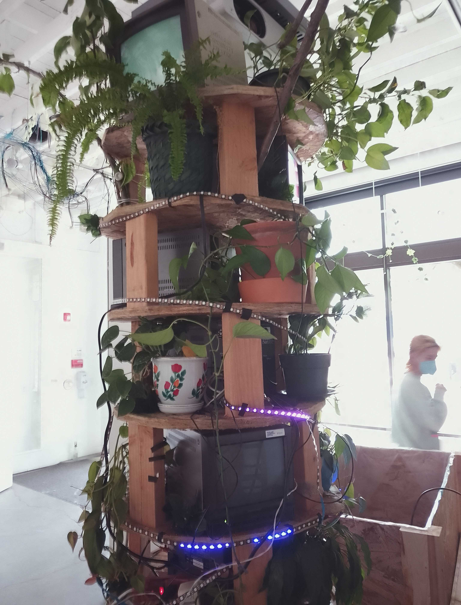
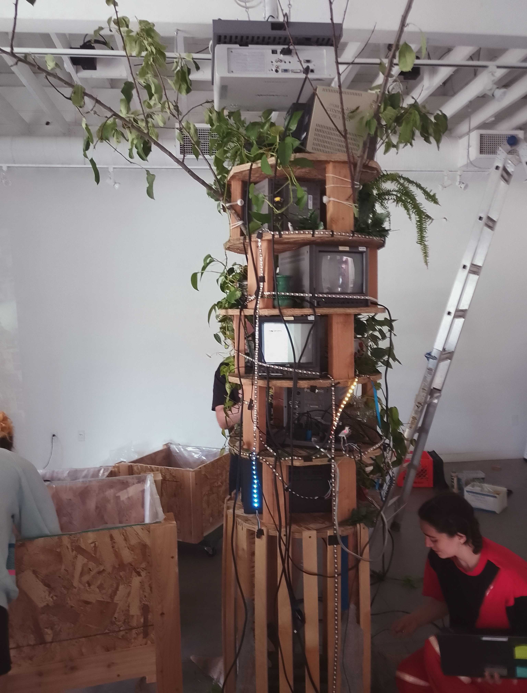
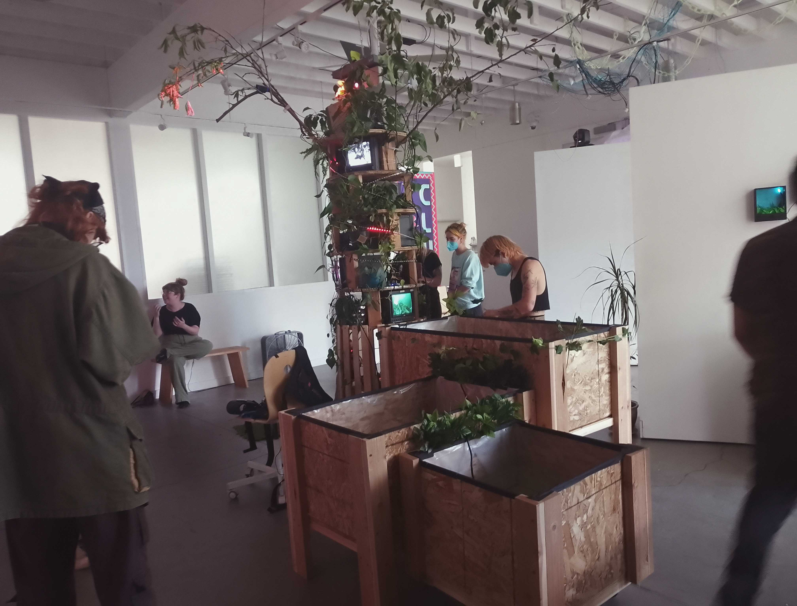
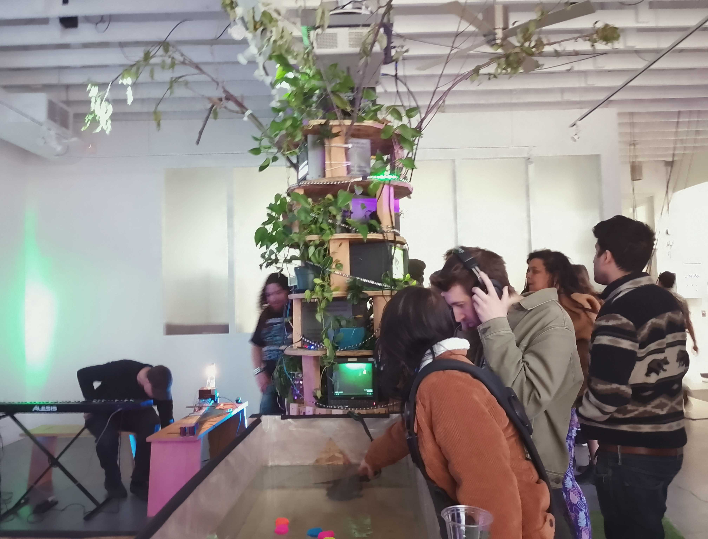

CymaSpace and Universal Music Design Present #DeafJazz: The Jazz Prism Project - A Revolutionary Accessible Jazz Experience
CymaSpace, in partnership with Universal Music Design (UMD), is thrilled to announce The Jazz Prism Project, an innovative concert series designed to make the transformative power of jazz accessible to the Deaf and Hard-of-Hearing (DHH) community. This groundbreaking event series will provide an immersive, multi-sensory jazz experience through visual and haptic technology, redefining the way audiences engage with music.
About the Jazz Prism Project
Funded by the prestigious South Arts Jazz Roads Tour grant, The Jazz Prism Project is a pioneering initiative that brings together cutting-edge jazz musicians and visionary DHH artists. Featuring the newly formed ensemble The Confluence, the project incorporates a fusion of technology and artistry to deliver an accessible jazz experience like no other.
The Confluence, led by vibraphonist Jake Chapman and saxophonist Tony Barba, combines the talents of deaf guitarist and CymaSpace founder Myles de Bastion, deaf music producer Nate Hergert, and percussionist Shawn Trail, alongside Universal Music Design’s lead engineer Dillon Simeone. Together, these musicians bring jazz to life through a unique blend of electro-acoustic soundscapes, audio-reactive visuals, and immersive haptics.
A Jazz Experience Reimagined for the Deaf and Hard of Hearing
Inspired by the work of renowned Deaf percussionist Evelyn Glennie, the project utilizes cutting-edge technology to make jazz accessible beyond auditory perception. With 27 channels of spatial haptics provided by Music: Not Impossible, DHH musicians and audience members can feel the music as it resonates through their bodies. Additionally, 50 Woojer haptic vests will be available for DHH attendees, allowing them to experience vibrations that mimic the nuances of jazz music, effectively using vibrations as “headphones.”
The Importance of Sonic Agency
The Jazz Prism Project is not just about providing access to music but about creating Sonic Agency for the DHH community. By enabling DHH individuals to feel, see, and engage with jazz in alternative ways, the project expands the concept of accessibility in the arts. Jazz has been a powerful medium of emotional resonance, political expression, and social connection, and this project ensures that the DHH community can partake in its transformative impact.
As #DeafJazz artists blend jazz, electro-acoustics, and innovative technology, they are pioneering a new genre of music that transcends hearing, allowing all individuals to experience jazz’s impact on the human spirit.
Tour Dates and Events
The Jazz Prism Project will tour across Oregon, offering a series of immersive concerts and educational workshops designed to deepen the connection between jazz and the DHH community:
- December 5, 2024– Southern Oregon University (Closed Workshops for Honors College and Percussion Students)
- December 6, 2024– Western Oregon University – Jazz Concert, 7 PM
- December 7, 2024– Portland Community College – #DeafJazz Concert, 7 PM
- December 8, 2024– Western Oregon University – Percussion Concert, 7 PM
Educational Workshops and Community Engagement
Each performance will be complemented by workshops and community sessions, providing participants an opportunity to engage hands-on with haptic technology, experience audio-reactive visuals, and explore new interfaces for musical expression. The workshops will be tailored to students and the DHH community, offering insight into the innovative technologies used and the artistic vision behind #DeafJazz.
Quotes from Organizers and Artists
“Jazz has historically been a medium for social change and cultural expression. Through the Jazz Prism Project, we’re ensuring that this rich art form is accessible to the Deaf and Hard-of-Hearing community in a way that’s both meaningful and impactful,” says Myles de Bastion, founder of CymaSpace.
“This project embodies the mission of Universal Music Design, which is to make music accessible and inclusive. We’re using technology to break down barriers and redefine what it means to experience sound,” adds Dillon Simeone, lead design engineer at UMD.
About CymaSpace and Universal Music Design
CymaSpace is a non-profit organization dedicated to making arts and cultural events accessible to the Deaf and Hard-of-Hearing community through innovative technology, education, and outreach. Universal Music Design, a team within CymaSpace, seeks to develop new interfaces, instruments, and methodologies to create universal music experiences that transcend auditory limitations.
Join Us for This Historic Event
Don’t miss this unique opportunity to experience jazz in a way that redefines accessibility and inclusivity. The Jazz Prism Project is set to become a milestone in accessible arts and a testament to the power of music to unite communities.
Media Contact:
Shawn Trail, Production Coordinator
Universal Music Design / CymaSpace
Phone: 541-829-2141
Email: shawn@universalmusicdesign.org
 






